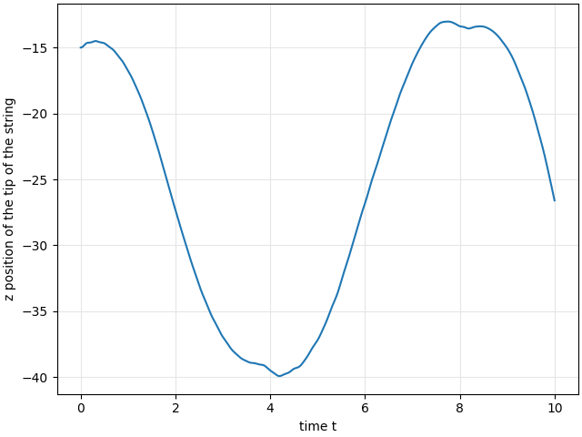
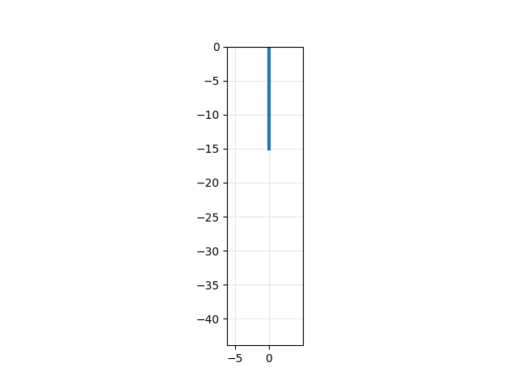

Example¶
This example shows how to simulate a geometrically exact string with fixed-free boundary conditions.
Problem description¶
The string is fixed at one end and free at the other. It hangs down under gravity and has linearly increasing velocity over its length.
Simulation¶
First, the initial conditions are defined as a Python function. The relative position \(s \in [0, L]\) defines the node location along the string. Here, the string is initially stretched by \(50 \%\) and has a linearly increasing velocity. Then, a string is initialized, with the desired length \(L\), number of discretization steps \(n_s\), mass density \(\rho\) and material parameter \(E\) as well as the area of the cross-section \(A\).
- GeometricallyExactString.initString(L, nsteps, rho, E, A, initialConditions)¶
Create a dictionary with parameters of gemetrically exact string.
- Parameters:
L (float) – length of the string.
nsteps (int) – number of discretization steps in space.
rho (jnp.ndarray) – density.
E (jnp.ndarray) – material value for the compressible Neo-Hookean material.
A (jnp.ndarray) – area of the crosssection of the string.
initialConditions (function) – function defining the relative position of one node in space.
- Returns:
GES – geometrically exact string.
- Return type:
dict
The dynamic simulation is then started and the results plotted.
>>> from GeometricallyExactString import *
>>> import jax.numpy as jnp
>>> T = 10. # simulation time
>>> nt = 2500 # number of time steps
>>> dt = T/nt # time step width
>>> g_ = 9.81 # graviational constant
>>> def initialConditionsString(s):
... return jnp.array([0., 0., -1.5*s]), jnp.array([0., 0.1*s, 0.])
>>> string = initString(L=10, nsteps=25, rho=4.5e0, E=1e2, A=0.1,
... initialConditions=initialConditionsString)
>>> x = simulate(string, nt, dt, g_)
>>> plotTipTrajectory(x, T, nt)
>>> createAnimation(x, string, T, nt)
This example results in the following plot and animation:
It may take a while to render the animation:
